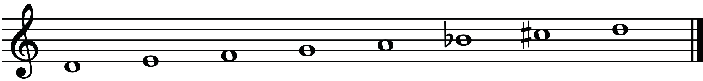
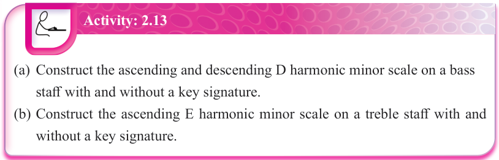
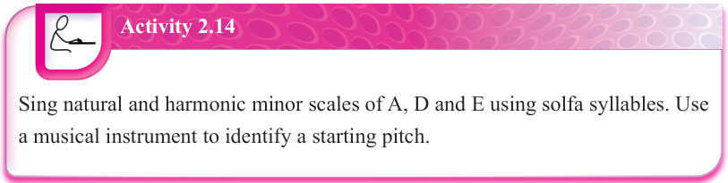
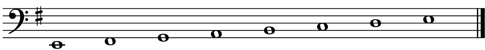
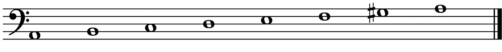
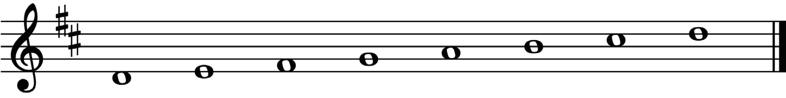
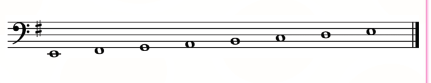
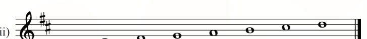

Figure 2.47: The D harmonic minor scale without a key signature
Activity: 2.13
(a) Construct the ascending and descending D harmonic minor scale on a bass staff with and without a key signature.
(b) Construct the ascending E harmonic minor scale on a treble staff with and without a key signature.

Activity 2.14
Sing natural and harmonic minor scales of A, D and E using solfa syllables.
Use a musical instrument to identify a starting pitch.

Revision exercise 2
1.
Name the following scales.
(i)

(ii)

(iii)


